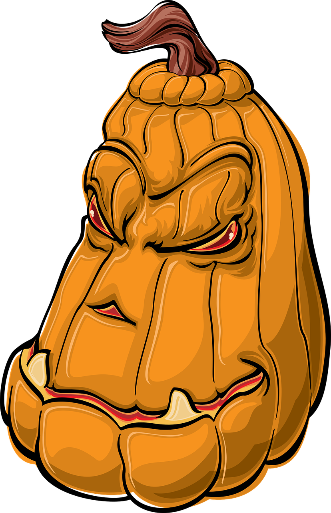

Have you ever wondered about the significance of pumpkins during Halloween?
The jack-o’-lantern has a long history with Halloween, although our favorite demonic faces haven’t always been carved out of pumpkins.
Their origin comes from an Irish myth about Stingy Jack, who tricked the Devil for his own monetary gain. When Jack died, God didn’t allow him into heaven, and the Devil didn’t let him into hell, so Jack was sentenced to roam the earth for eternity. In Ireland, people started to carve demonic faces out of turnips to frighten away Jack’s wandering soul. When Irish immigrants moved to the U.S., they began carving jack-o’-lanterns from pumpkins, as these were native to the region.
But how did jack-o’-lanterns become associated with Halloween? Halloween is based on the Celtic festival Samhain, a celebration in ancient Britain and Ireland that marked the end of summer and the beginning of the new year on November 1. It was believed that during Samhain the souls of those who had died that year traveled to the otherworld and that other souls would return to visit their homes.
